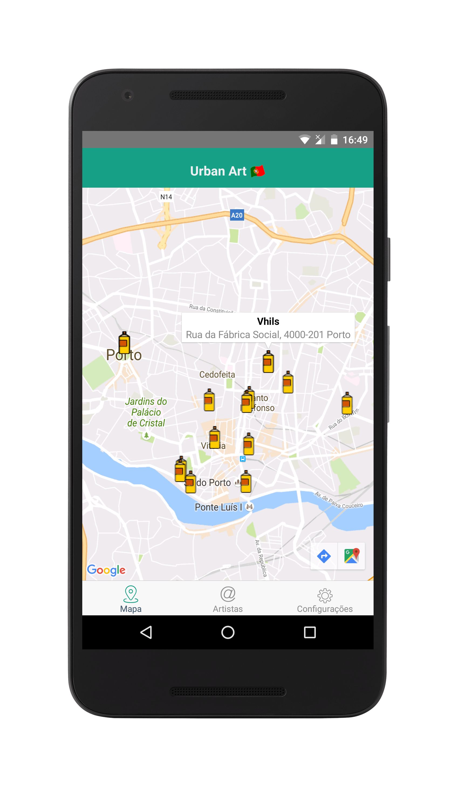
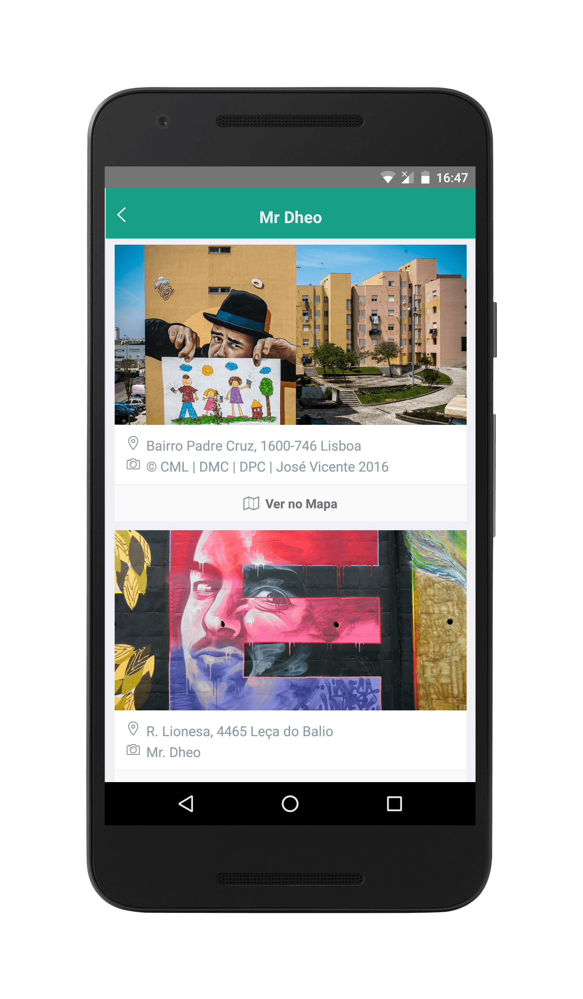
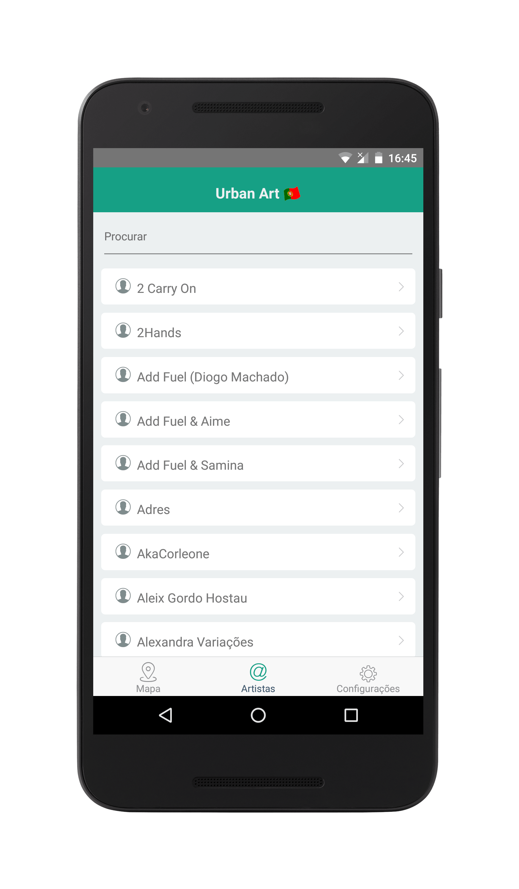

Urban Art Portugal 🇵🇹
Explore e navegue pelo mapa e descubra a localização como também receber indicações de como chegar ao local. Aprecie as obras através de fotografias em alta qualidade e tudo organizado por artistas. A app está disponível para download na App Store ou Google Play.


Obras de Arte
Descubra vários pontos de arte urbana através de fotografias em alta qualidade e pode também visualizar a localização no mapa de cada obra podendo obter indicações de como chegar ao local.
Artistas
É disponibilizada uma lista completa de artistas onde pode conhecer um pouco mais sobre cada um como também apreciar e até navegar até as suas obras.
